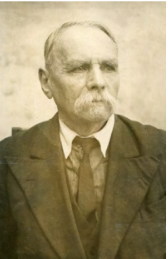
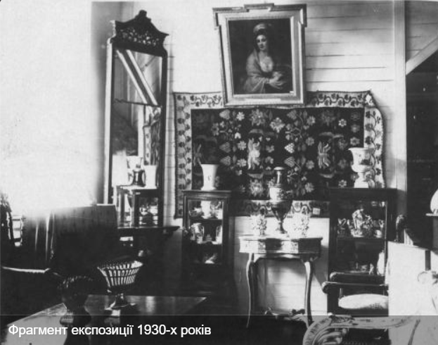
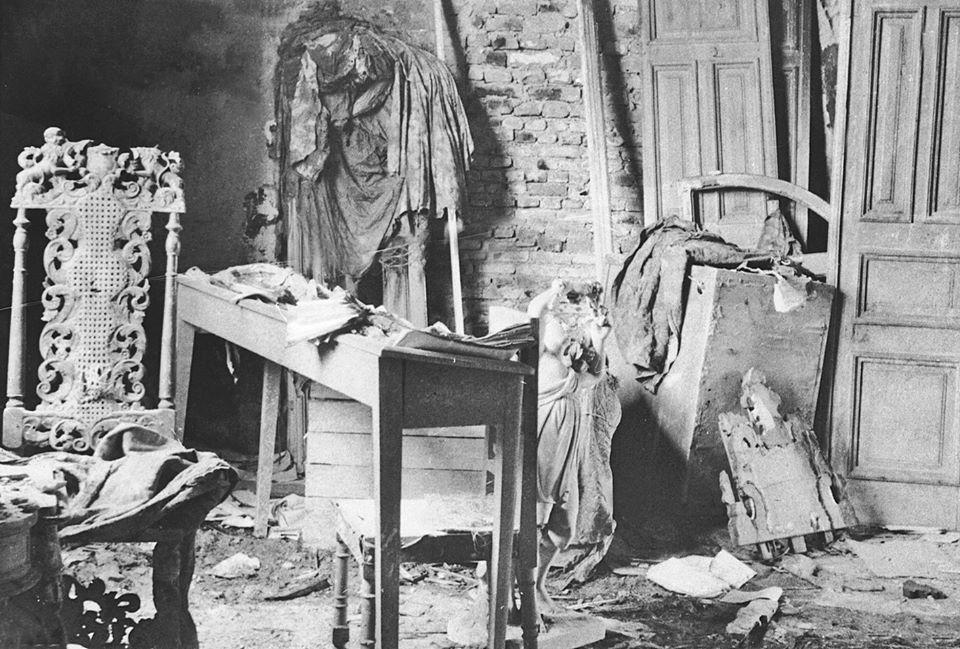
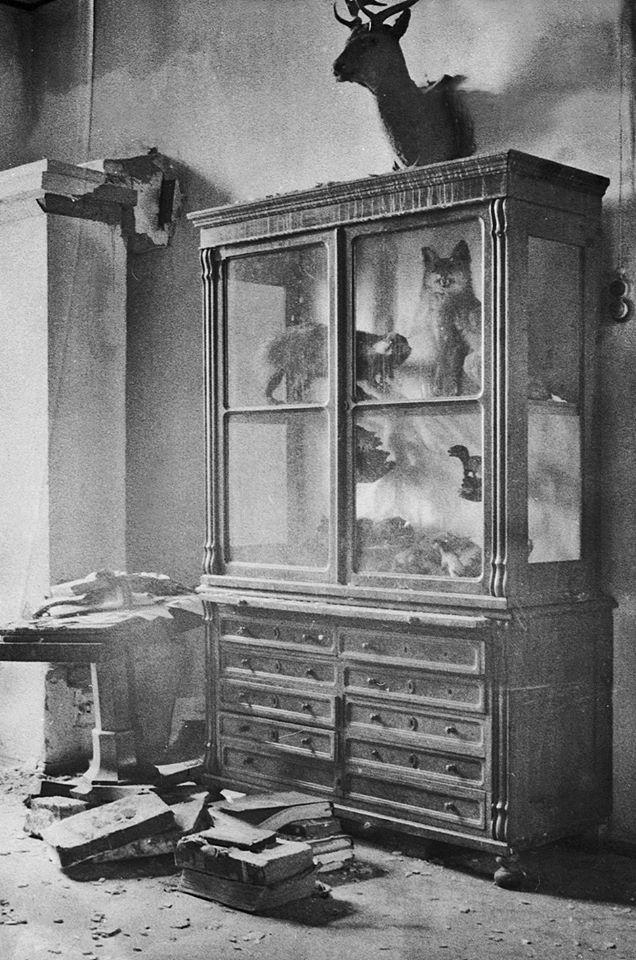
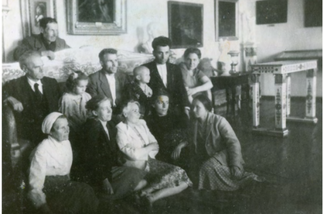
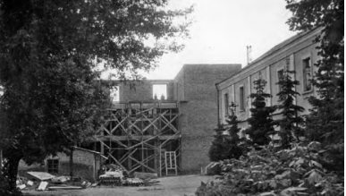
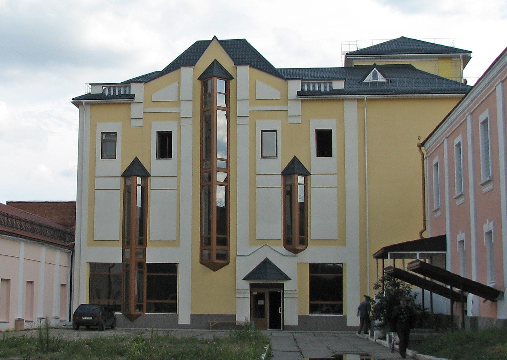

Історична карта 1945 року
Перейти до карти
«Все музейне майно завойоване нами та належить нам», - пише про німецьку владу у своїх спогадах Василь Подольський, який виконував обов’язки директора Вінницького обласного краєзнавчого музею та Музею революції під час окупації за часів Другої світової війни.

Схожу тенденцію ми зустрічаємо й на сучасних окупованих територіях. Перед працівниками культурно-історичних установ виникає складний вибір – збереження життя та швидка евакуація чи намагання зберегти музейну спадщину. Загарбники вивозять самі цінні експонати, що псуються під час цього, а надія на повернення зникає з кожним подальшим роком. Куди не може дотягнутися окупантська рука – долетить снаряд. Варто лише згадати про долю музею Сковороди.
Та завойовники не є оригінальними у своїй поведінці, і доля вже згаданого Вінницького музею є цьому доказом.
Сам майбутній музей виник з приходом більшовиків, коли вінницькі аматори мистецтва намагалися врятувати від розграбування новою владою мистецького фонду княгині Марії Щербатової, що був у її маєтку. Картини з колекції Потоцьких та Строганових, мармурові та інші художні вироби стали підвалинами для перших експозицій. Пізніше там можна було побачити речі з палаців Старжа-Якубовських, Грохольських та інших поміщиків.
Але приміщення для цього через запроваджену політику скасування приватної власності на панські будинки (що і стало причиною захоплення маєтку Щербатової більшовикам та подальшого розстрілу його власниці) кілька разів змінювалося. Спочатку врятовану колекцію намагалися зберігати у будинку доктора Вілінського, пізніше доктора Топчевського, але остаточним варіантом стали «Старі Мури», де музей знаходиться і сьогодні.
Та Вінницький обласний краєзнавчий музей та Музей революції, що були в одному приміщенні, і надбання за їхні 24 роки існування (окрім художнього з’явилися етнографічні, природничі та історичні відділи) довелося рятувати знову тепер уже від німецько-фашистської окупації.

1938 року було проведено останню інвентаризацію колекції музею перед початком бомбардувань Вінниці, що вже відбувалися з 27 червня 1941 року: художній відділ — 1 680 одиниць збереження; відділ “Музей революції” — 1 510; відділ природи — 1 220; єврейська колекція — 733; колекція культових речей — 526; порцеляна, скло — 564; археологічна колекція — 1 424; кераміка — 989; килими, вишивки, тканини, одяг — 2 264; предмети побуту — 461; нумізматична колекція — 1 059; боністика — 246; писанки — 107 (80 ящиків з 1413 писанок + 27 окремих писанок).
У планах було до початку потенційної окупації вивести всі цінні експонати Подільської історії, та через швидкий від’їзд радянських адмінустанов музей евакуювати не встигли. Але змогли виконати сталінський наказ про знищення документації музею, описів, листування, праці та навіть деякі цінності. Директора музею та частину наукових співробітників на той момент вже було мобілізовано.
19 – 20 липня 1941 року Вінницю було окуповано. У приміщенні музею закрилися вже згаданий Василь Подольський, Михайло Славський та ще інші працівники й намагалися стримувати угорських солдатів. Та коли військові таки увірвалися до приміщення, то почали грабувати та трощити скульптури й бюсти Леніна та Сталіна. Зі спогадів сина Славського відомо, що серед розбитої колекції присвяченій вождю була й фігурка зі цукру, якою ласували співробітники музею протягом окупації. Пізніше оголосять, що музей тепер під охороною німецького командування, а Подольського буде призначено новим директором.
Особливий статус місту створили відвідування топ посадовців третього рейху (Гітлер, Герінг, Гіммлер, Геббельс, Борман, Кейтель, Йодль, Розенберг, Манштейн та інші), близькість ставок Гітлера та Герінга, розвідуправління генштабу на чолі з Геленом та інші установи. Тому культурне життя не припинялося, працювали 2 кінотеатри, близько 6 бібліотек, казино та театр для розваг офіцерів. І з часом музей також відновив свою роботу.
Відповідно першим наказом “нової влади” стало нищення Музею революції та підготовка нових експозицій для відвідувачів (це могли бути лише німці, румуни та угорці). Та з метою врятувати експонати, їх було заховано та заставлено картинами, аби вважалося, що все було виконано. Паралельно “гості музею” розглядали, що було б для них цікавим серед інших колекцій. Подольський згадує, що їхню увагу привертали килими, вишивки, гончарні вироби, особливо монети та медалі, які доводилося від них також ховати.
Та хитрощі не завжди спрацьовували. Відповідно до посилення жорсткості окупаційного режиму в 1943 році, ускладнювалися й умови для збереження музейних цінностей - кількість працівників скоротили до трьох. За спогадами Подольського впродовж років відбувалися крадіжки, а шість картин “у тимчасове користування” було забрано штадтскомісаром Маргенфельдом. Серед них був і портрет княгині Марії Щербатової, чию спадщину раніше намагалися врятувати від більшовиків.

Коли окупаційна влада почала відчувати, що перебіг війни іде не на їхню користь – почалися відверті грабунки та нищення. У ніч з 18 на 19 листопада 1943 року було підпалено сусідню з музеєм будівлю на той момент педагогічного інституту, де розміщувалася служба Геббельса. Вогонь перекинувся та винищив музейну бібліотеку, а частину природничого та художніх відділів було пошкоджено під час гасіння пожежі водою. Та працівники скористалися інцидентом, як можливістю сховати у підвальній кімнаті частину картин, мармурових статуй, фарфору та скла й замурували вхід.

Вже через кілька днів після пожежі приїхав представник рейхскомісара, професор Штампфус, щоб відібрати все варте “вивезення” до Німеччини. Цікавили найбільше знову експонати археологічного та етнографічного відділів. За актами, складеними Василем Подольським, було вивезено у 43 ящиках: килими українські (два з них датовані 1819 та 1827 рр.) – 60 шт., кераміка – 1 000 шт., зразки різних вишивок – 3 000 шт., вишиті сорочки, пояси, рушники – 100 шт., писанки – 500 шт., експонати з археології – 300 шт., монети та медалі – 1 000 шт. Доля цих експонатів достеменно не відома й ґрунтується на чутках різних працівників, що якась частина була повернута, щось потрапило до інших музеїв, а деякі було зіпсовано через перевезення.
Решта експонатів була пошкоджена у наслідок влучання німецького снаряда в дах музею, коли точилися бої за місто.

На жаль, для українців це не перший раз, коли їхню культурну спадщину розкрадають. Читаючи історію Вінницького музею вісімдесятирічної давнини, не важко уявити, що схоже може відбуватися і на нинішніх окупованих територіях. Кожна окупація призводить до різних втрат, від яких важко оговтатися навіть через десятиліття, а дещо втрачається назавжди.

Та одночасно з цим історія доводить, що попри все ми завжди відроджуємося. Сам музей після звільнення Вінниці відновив свою роботу за 4 місяці, а замурована кімната перетворилася на місце для експозиції про Другу світову війну, і досі поповнюється новими цінними експонатами.

автор Маєвська М.
Цікаві місця

Всі права захищені.